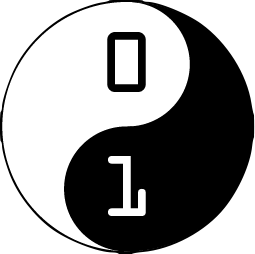
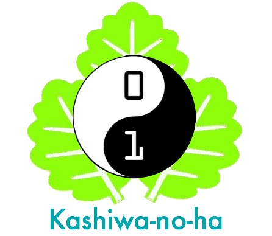

概要
Special Presentation Day とは、CoderDojo Kashiwaに参加している子どもたちによる作品発表会です。
昨年度に引き続き、２回目の開催となります。
昨年度の様子を見る
開催日時：2015年12月20日（日） 13:00 - 16:00
場所：KOILスタジオ（koil.jp）
対象：CoderDojo Kashiwa及びKashiwa-no-haの活動に興味がある全ての方
参加費：無料
タイムテーブル
タイムテーブルは変更される可能性があります。あらかじめご了承ください。
12:40 開場
13:00 開演 基調講演
13:10 発表会①
13:50 休憩
14:05 発表会②
14:45 発表会③
15:25 休憩
15:40 下半期活動報告
16:00 終了
|  |  |